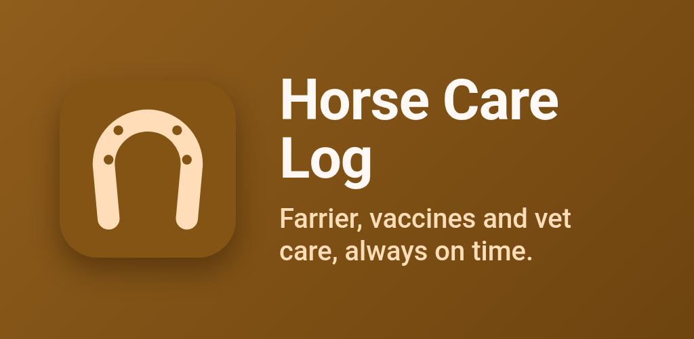
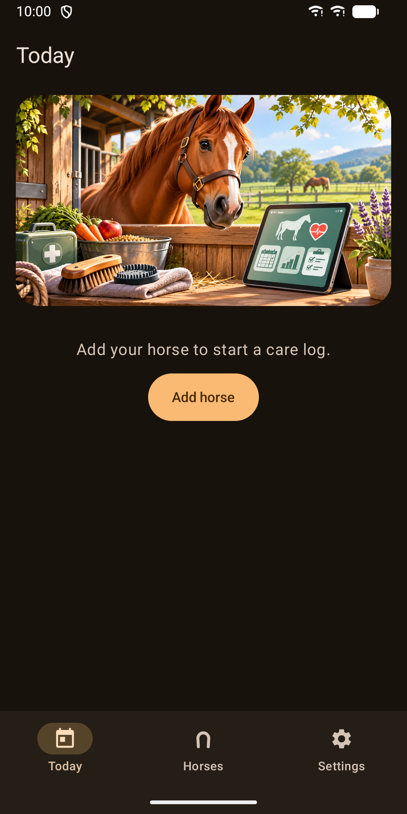
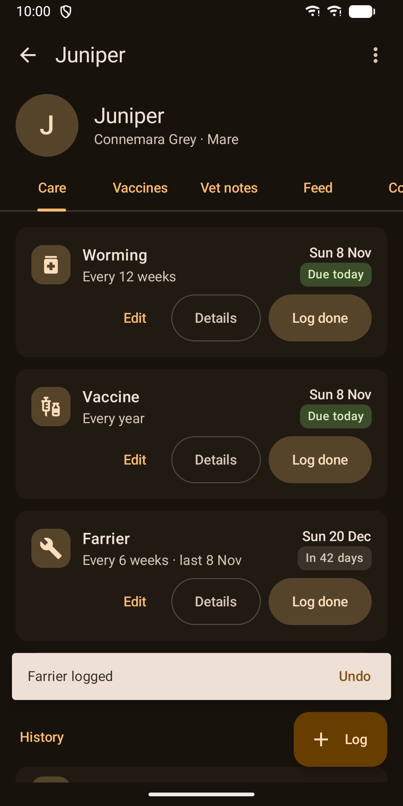
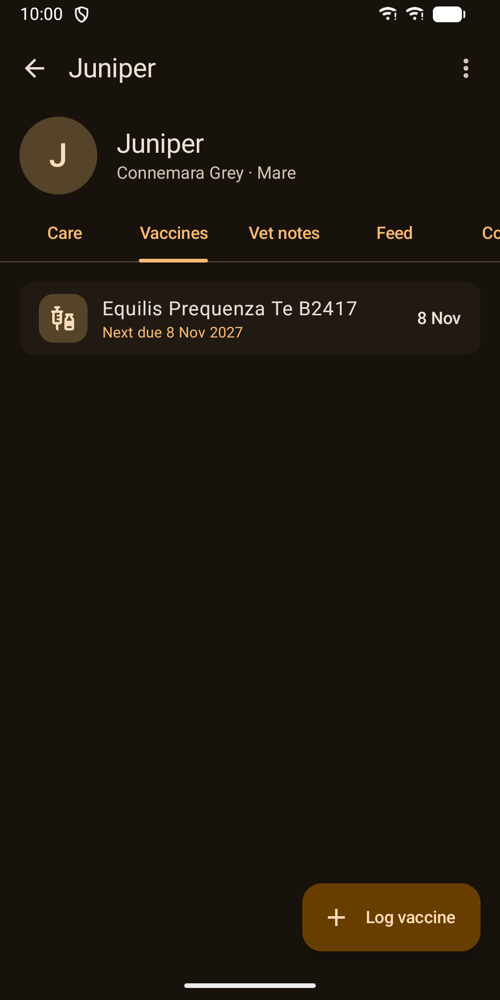
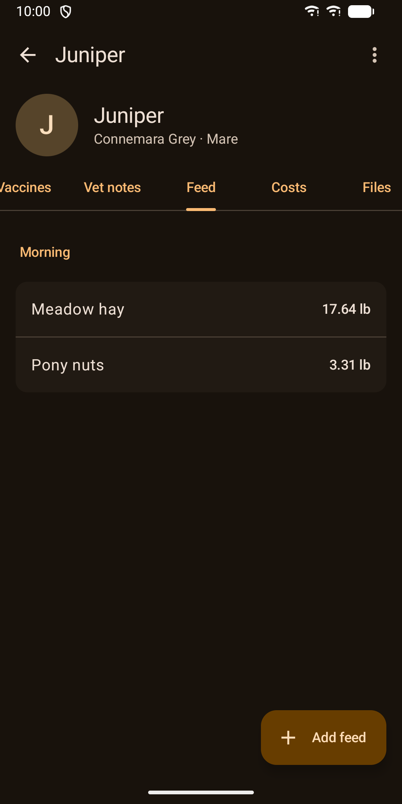
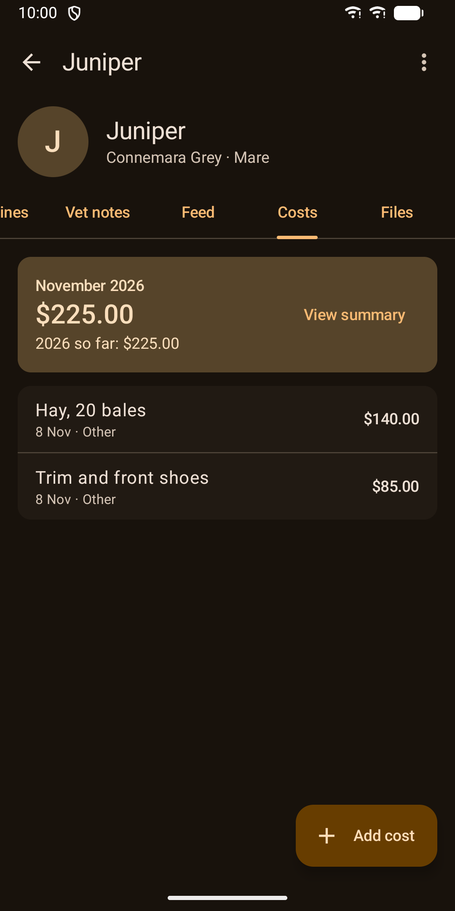
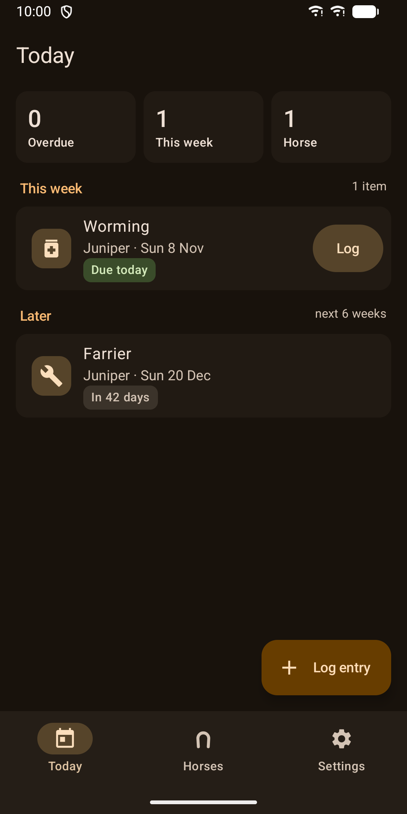
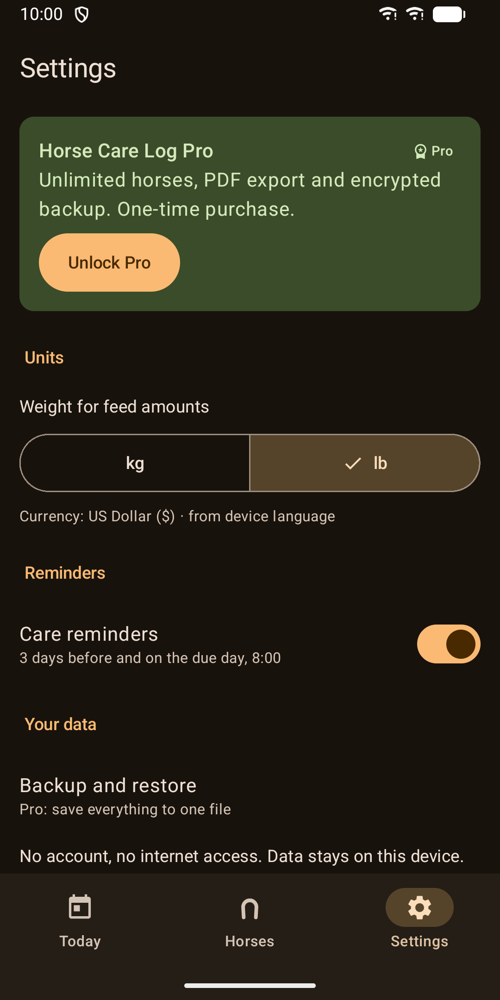

Horse Care Log: Farrier & Vet
Offline horse care log: farrier, vaccines, worming, vet notes, costs, reminders.








About
Keep every horse's care in one place, on your phone, with no account and no internet. Horse Care Log is made for private owners with one to five horses. Log farrier visits, vaccinations, worming, vet notes, feed and costs, and get a reminder before anything is due. Never miss a due date • Recurring schedules for farrier, vaccines, worming and anything else you need, such as dentist, saddle fit or physio. • One tap on "Log done" records the visit and sets the next due date. Tapped by mistake? Undo. • A reminder 3 days before and another on the day. • The Today screen shows what is overdue and due this week, across all your horses. • A home screen widget shows what is due this week at a glance. All the records in one place • Horse profiles with photo, breed, birth date, sex, colour, microchip and passport number. • Vaccine records with product, batch number, vet and next due date. • Vet notes with photos and PDFs attached, like Coggins papers, passports or invoices. • A daily feed ration per horse, in kg or lb. • Costs by category (vet, farrier, feed, other) with totals per month and year. Private by design • Fully offline. The app has no internet permission. • No account, no cloud, no tracking, no ads. • Your data stays on your phone. Photos are shrunk and their location data is removed. • Lock screen reminders do not show horse names. Pro, a one-time purchase • Unlimited horses. The free version keeps one horse. • A PDF health record with vaccine and vet history, ready for shows, transport and new vets. • Backup and restore to a single file you choose, optionally encrypted with a password (AES-256). Free for your first horse: care log, reminders, costs and the widget. No subscription. Works on phones and tablets, in light and dark mode, and with screen readers.